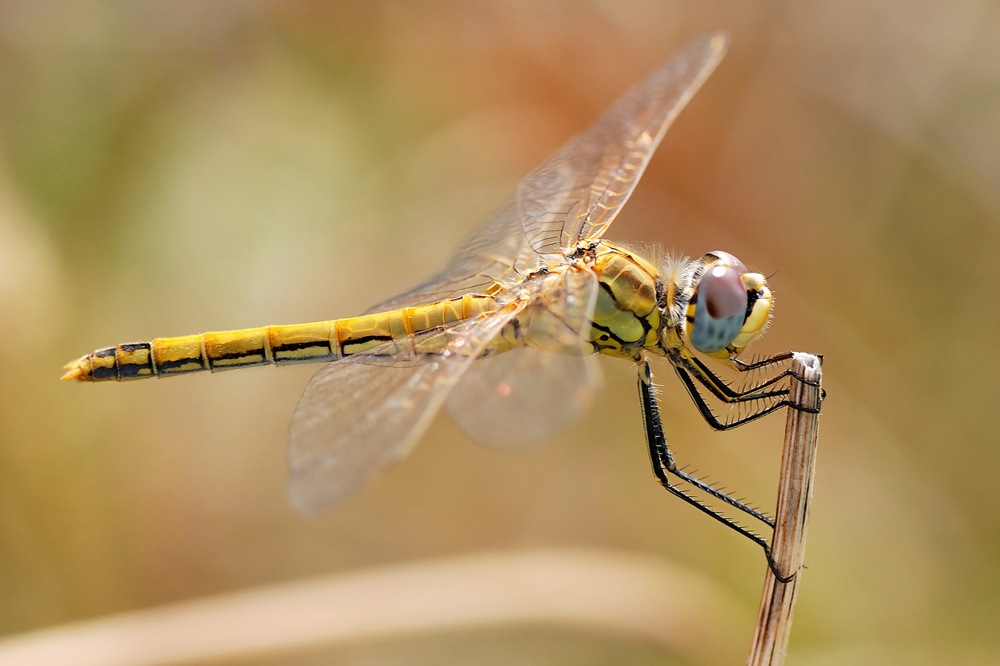

Los odonatos son unos de los insectos más bonitos del mundo. Este grupo incluye más de 3 500 especies que se distribuyen por todo en mundo. Se trata de las libélulas (infraorden Anisoptera) y los caballitos del diablo (suborden Zygoptera), unos insectos depredadores con ninfas (crías) acuáticas.
Los odonatos poseen dos pares de alas membranosas y patas no locomotoras que les sirven para atrapar presas y agarrarse al sustrato, pero no para caminar. Sus ojos son compuestos y aparecen separados en los caballitos y muy juntos en las libélulas. Este carácter permite diferenciarlos.
